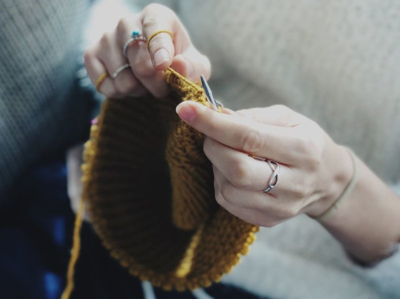

Jennifer's Crafts Corner

Crafts are the deepest expression of our thoughts in the simplest way.
Crochet crafts generally form a kind of fabric that shapes all types of objects; The best of all is that if this type of craft is one of your favorites, I can tell you that today they are a total trend and there are ideas to make absolutely any type of craft.
crochet crafts for the home or as a gift and today at Creative Spaces we present them to you.
How to start knitting – Circular needles or straight needles?

What are circular needles and how are they different from straight ones?
Straight needles are individual, separate needles, while circular needles include a cable between them to create seamless circular garments.
The main difference is this: when we knit with straight needles, as we turn the needles in each row, we alternately see the right and wrong sides of the garment. In the case of circular knitting we always see the same thing, on the outside of the needles the right side of the work and on the inside the wrong side.
Advantages of circular needles that knitters comment on:
- They are small, light and easy to carry anywhere. And some say that if they knit continental, they find them more comfortable to work with.
- You can knit on a table and not carry the weight of the wool . This helps in posture for those who suffer from back or arm ailments. By working in a circular motion, they allow you to knit tubular projects without making many of the seams.
- The cable can be of different lengths: generally between 20 cm and 150 cm, allowing large projects to be knitted.
Learn to knit easily and well with two needles

learn it is easy !!!
The club is more than a knitting course. The club is a space where you learn to knit from Jennifer. You will have access to a wide variety of patterns, techniques, classes in video tutorial format, and you will have the personalized help of Lucila who will give you all the tools and secrets of two-needle knitting so that you can knit dream clothes.
Knit well. Knit forever. Enjoy knitting.
Reasons to join the Club
- ✓ You will become a first-class knitter and enjoy creating your own projects.
- ✓ You will learn directly from Lucila, who has been teaching knitting for more than 40 years.
- ✓ At your disposal the techniques and delicacies that no one else teaches.
- ✓ You will have all the tutorial videos and explanations ordered and organized by classes to learn at your own pace.
- ✓ More than 40 garment patterns available to knit from day one, and one more every month.
- ✓ You will knit accompanied, and you will share concerns and projects with the rest of the knitters.
- ✓ And because knitting and having a project is a challenge that is good for the body and mind.